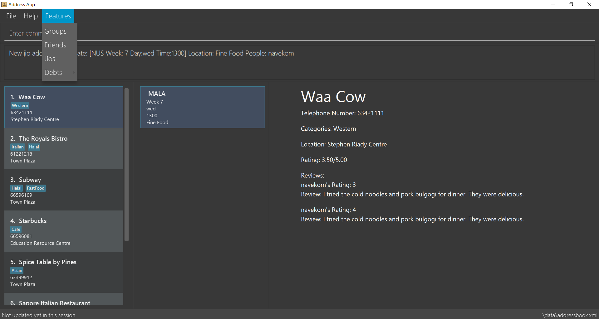

Overview
Makan Book is a restaurant guide and application for diners in National University of Singapore (NUS). It allows users to write and view reviews for restaurants within NUS. Additionally, Users are able to interact with one another to create a more enjoyable experience.
Summary of contributions
-
Major Enhancement: The Storage of User Data in a separate file
-
What it does: Any data relating to User such as friends, jios, timetable and schedule are all stored in a separate file called Users.xml
-
Justification: The separation of data allows the ease of maintenance and extraction of data.
-
-
Major Enhancement: added the ability to leave a review for a restaurant
-
What it does: It allows a user leave a rating and review for a restaurant. The user’s review will adjust the overall rating of the particular restaurant given that it is an averaged score.
-
Justification: This feature allows a user to view all the reviews written for a particular restaurant. A more informed decision can be made. The user can also see all the reviews previously given as a record of the restaurants he visited.
-
Highlights: This enhancement was challenging to implement because it had to store the review in both the User Data and Restaurant AddressBook.
-
-
Minor Enhancement: added the ability for a User to create an account
-
What it does: Allows a User to create an account to interact with the application.
-
Justification: This feature improves the product significantly because a user can now create an account to join the network of users. The ability to have accounts allows for various functionality such as adding friends, creating Jios and more.
-
Highlights: This enhancement affects existing commands and commands to be added in future. For instance, only users who are logged in should be able to interact with one another.
-
-
Minor enhancement: added a displayProfile command that allows the user to view all the data that is related to him. This includes his own personal information and the reviews he has made.
-
Code contributed: [here]
-
Other contributions:
-
Project management:
-
Team Lead - Managed releases
v1.1-v1.4(4 releases) on GitHub -
Updated AboutUs.doc: #37
-
Updated ReadMe.doc: #335
-
Updated Sample Data: https://github.com/CS2103-AY1819S1-W10-2/main/pull/227
-
-
Enhancements to existing features:
-
Updated the GUI web pages for display in the browser panel
-
-
Documentation:
-
Contributed to the overall flow of User Guide and Developer Guide, on top of my own features.
-
-
Community:
-
Contributions to the User Guide
Given below are sections I contributed to the User Guide. |
Restriction of Privileges to Makan Book
Currently, all users are can add, delete, edit and make changes to restaurants in the makan book even if the User Guide says otherwise. This can affect all other users.
Creation of Administrator Account
To prevent this, administrator accounts will be created. Only administrators will have the ability to call commands that modify the restaurants in Makan book.
Allowing Users to suggest restaurants to be added into Makan Book
To allow users to suggest restaurants outside of NUS to be included to the Makan Book. This would be sent to the administrators for review. Administrators can choose to add these restaurants for all users in the Makan Book.
New Features in v2.0
List Visited Restaurant: listVisitedRestaurants
Lists the restaurants a user has visited.
Format: listVisitedRestaurants
Add Visited Restaurant: addVisitedRestaurants
Allows user to add a restaurant into his visited restaurant list with date, price, rating/score and meal consumed.
Format: addVisitedRestaurants INDEX t/DATE p/PRICE r/SCORE rvw/WRITTEN_REVIEW m/MEAL_CONSUMED
Examples:
-
addVisitedRestaurants 3 t/2011-11-11 p/3.70 r/4 rvw/Value for money indeed m/Lemon Chicken Rice
Add Favourites: addFavourite
Allows User to add a restaurant into his account’s favourites.
Format: addFavourite INDEX
Examples:
-
addFavourite 3
List Favourites: listFavourites
Allows User to list the restaurants he has entered into his favourites.
Format: listFavourites
Quick Start
-
Ensure you have Java version
9or later installed in your Computer. -
Download the latest
makanbook.jarhere. -
Copy the file to the folder you want to use as the home folder for your Makan Book.
-
Double-click the file to start the app. The GUI should appear in a few seconds.
 -
Type the command in the command box and press Enter to execute it.
e.g. typinghelpand pressing Enter will open the help window. -
Some example commands you can try:
-
list: lists all restaurants -
signupu/johnnydoe pwd/pAssw0rd n/John Doe p/98765432 e/johnd@example.com: Sign Up for an account in the Makan Book. Allows you to use Makan Book’s many features -
exit: exits the app
-
-
Refer to Features (Does Not Require Login) for details of each command.
Features (Does Not Require Login)
Command Format
-
Words in
UPPER_CASEare the parameters to be supplied by the user e.g. inadd n/NAME,NAMEis a parameter which can be used asadd n/Waa Cow. -
Items in square brackets are optional e.g
n/NAME [u/USERNAME]can be used asn/Waa Cow u/navekomor asn/Waa Cow. -
Items with
… after them can be used multiple times including zero times e.g.[u/USERNAME]…can representu/navekom,u/katespade u/themythetc. -
Parameters can be in any order e.g. if the command specifies
u/USERNAME pwd/PASSWORD,pwd/PASSWORD u/USERNAMEis also acceptable.
|
Makan Book data is saved in the hard disk automatically after any command that changes the data. |
Viewing help : help
Format: help
Listing all restaurants : list
Shows a list of all restaurants in the makan book.
Format: list
Locating restaurants by name: find
Finds restaurants whose names contain any of the given keywords.
Format: find KEYWORD [MORE_KEYWORDS]
Examples:
-
find Waa Lao
ReturnsWaa CowandLao Ban -
find Din Tai Fung
Returns any restaurant having namesDin,Tai, orFung
Listing entered commands : history
Lists all the commands that you have entered in reverse chronological order.
Format: history
|
Pressing the ↑ and ↓ arrows will display the previous and next input respectively in the command box. |
Selecting a restaurant : selectRestaurant
Selects the restaurant identified by the index number used in the displayed restaurant list. It will display the webpage of the restaurant
which contains it’s details, overall rating and reviews written by users
Format: selectRestaurant INDEX
Examples:
-
list
selectRestaurant 2
Selects the 2nd restaurant in the address book. -
find Hwangs
selectRestaurant 1
Selects the 1st restaurant in the results of thefindcommand.
Selecting a restaurant : selectOther
Selects the item (Friend, Group, Debt, Request, Jio) identified by the index number used in the displayed item list (the second list panel). It will display details of the item
which varies based on the item selected (eg. Jio contains name, date, address, people)
Format: selectOther INDEX
Examples:
-
listJio
selectOther 2
Selects the 2nd jio in the address book. -
listGroups
selectOther 1
Selects the 1st group in the address book.
Signing Up for a Makan Book Account: signup
Allows a User to create an account for use in the Makan Book. Automatic log in upon sign up.
Format: signup u/USERNAME pwd/PASSWORD n/NAME p/PHONE_NUMBER e/EMAIL
Example:
-
signup u/davemyth pwd/pwd123123 n/Dave Batik p/92225822 e/davebaumb@gmail.com
Exiting the program : exit
Exits the program.
Format: exit
Features (Requires Login)
Log In into an existing Makan Book Account: login
Allows a User to log into an existing account in the Makan Book.
Format: login u/USERNAME pwd/PASSWORD
Example:
-
login u/davemyth pwd/pwd123123
Log Out of an existing Session: logout
Allows a User to log out of an existing session.
Format: logout
Write Review For Restaurant: writeReview
Allows user to write a review for a specific restaurant.
Format: writeReview INDEX rate/RATING rvw/REVIEW
Examples:
-
writeReview 3 rate/3 rvw/The food is not the best, but definitely value for money!
Display User Profile: displayProfile
Allows a user to view his own profile in the Makan Book. The browser panel will then contains the user’s details and
the reviews he’s written.
Format: displayProfile
Contributions to the Developer Guide
Given below are sections I contributed to the Developer Guide. |
Storage component

API : Storage.java
The Storage component,
-
can save
UserPrefobjects in json format and read it back. -
can save the Address Book data in xml format and read it back.
-
can save the User data in xml format and read it back.
Common classes
Classes used by multiple components are in the seedu.addressbook.commons package.
Implementation
This section describes some noteworthy details on how certain components and features are implemented.
Storage Component Design
Current Implementation
The storage of Makan book is split into two different xml files namely users.xml and addressbook.xml where data
relating to users are stored in the formal and data relating to restaurants are stored in the latter.
Aspect: Ease of Maintenance
-
Alternative 1 (current choice): Split Storage into into two different components.
-
Dividing storage into two different components meant the creation of multiple other classes for the storing of data relating to users such as
UserDataandXmlSerializableUsers. -
However, this was deemed necessary and appropriate as User and Restaurant is abstracted out and encapsulated. Should there be a reset of Users, the restaurant data would remain unaffected.
-
Pros: Abstraction of Data that are separate.
-
Pros: Easier to maintain.
-
Cons: Time costs to implement.
-
-
Alternative 2: Storing the data of Users and Restaurants in the same
addressbook.xmlfile.-
Pros: Easier to implement.
-
Cons: Difficult to maintain and scale. All sorts of data relating to users will be stored together with restaurants.
-
Write Review Feature
Current Implementation
The write review feature allows a user to write a review about a restaurant. This review is available for all users in the Makan Book to view. This review is then stored internally into the restaurant addressbook and the current user. When the command writeReview is called and executed, the model manager creates an UserReview (to be stored in restaurant addressbook) and a RestaurantReview (to be stored into User) as seen in the sequence diagram below.

Additionally, a restaurant contains an overall rating, the average rating of all the reviews it has. The activity diagram below describes the process of updating the restaurant’s overall rating.
Design Considerations
Aspect: Where to store User Review
-
Alternative 1 (current choice): Saves the review in both User and restaurant addressbook.
-
Pros: Greater abstraction and encapsulation of Data
-
Pros: Ease of displaying the list of reviews that a specific User has written
-
Pros: Ease of displaying the list of reviews of a specific Restaurant
-
Pros: Ease of updating the Overall Rating of a Restaurant
-
Cons: Contains a number of repeated code.
-
E.g. UserReview and RestaurantReview are identical except that UserReview stores the Restaurant Name while RestaurantReview stores the Username of the User.
-
-
-
Alternative 2: Saves the review in restaurant adddressbook.
-
Pros: Ease of Implementation (Significantly fewer classes)
-
Cons: Cluttered Storage of Data making it difficult to maintain and scale
-
Sign Up, Login and Logout Feature
Current Implementation
The current implementation of Makan Book does not allow the usage of all the features. Certain features require registration
or login of an account. For instance, the adding of friends can only be done upon log in. Sign Up, Login and Logout commands
can be entered through the Command Line Interface. The implementation is aided by the current modelManager which keeps track
of whether a user is currently signed in and which user it is. In doing so, data relating to this particular user during his session
can be saved.
Sign Up for Makan Book
-
Signing Up for an Account in the Makan Book.
-
Prerequisites: User does not have an existing account in the Makan Book.
-
Test case:
signup u/johnnydoe pwd/pAssw0rd n/John Doe p/98765432 e/johnd@example.com
Expected: Successfully Registered
-
-
-
logoutand Sign Up with the same username as before-
Prerequisites: Username is already taken in Makan Book.
-
Test case:
signup u/johnnydoe pwd/pAssw0rd n/John Doe p/98765432 e/johnd@example.com
Expected: This username already exists in the Makan Book
-
-
Login a User
-
Log in into an non-existing Makan Book Account.
-
Prerequisites: User does not have an account in the Makan Book.
-
Test case:
login u/naveko pwd/asd
Expected: Either Username or Password is Incorrect
-
-
-
Log in into an existing Makan Book Account, but with incorrect password.
-
Prerequisites: User has an existing account, log in with incorrect password.
-
Test case:
login u/johnnydoe pwd/password
Expected: Either Username or Password is Incorrect
-
-
-
Log in into an existing Makan Book Account, with correct password.
-
Prerequisites: User has an existing account and is currently not logged in.
-
Test case:
login u/johnnydoe pwd/pAssw0rd
Expected: Successfully Logged In
-
-
-
Log in again while in an existing session.
-
Prerequisites: User is currently logged in and tries to log in again.
-
Test case:
login u/johnnydoe pwd/pAssw0rd
Expected: User is already logged in
-
-
Log Out a User
-
Log Out from an existing session.
-
Prerequisites: User is currently logged in.
-
Test case:
logout
Expected: Successfully Logged Out
-
-
-
Log Out again despite no active session.
-
Prerequisites: Log out even though no user is currently logged in.
-
Test case:
logout
Expected: There is no user currently logged in
-
-
Display Current User Profile
-
Login into an account and enter
displayProfile.-
Prerequisites: User is currently logged in.
-
Test case:
displayProfile
Expected: Displaying User Profile
-
-
-
Logout and enter
displayProfile.-
Prerequisites: Display Profile Command used despite having no current User logged in.
-
Test case:
displayProfile
Expected: User is not currently logged in
-
-
Write a Review
-
Login into an account and write a proper review
-
Prerequisites: User is currently logged in and review is in the proper format.
-
Test case:
writeReview 1 rate/3 rvw/The cold noodles and pork bulgogi were delicious.
Expected: Successfully Wrote Review
-
-
-
Login into an account and Write an incorrect review with incorrect rating
-
Prerequisites: User is currently logged in and rating given is not from 1 to 5.
-
Test case:
writeReview 1 rate/6 rvw/The cold noodles and pork bulgogi were delicious.
Expected: Rating must be a positive integer from 1 to 5 where 1 is the lowest rating and 5, the highest rating.
-
-
-
Login into an account and Write an incorrect review with blank review
-
Prerequisites: User is currently logged in and written review is empty.
-
Test case:
writeReview 1 rate/5 rvw/
Expected: Written Reviews can take any values, and it should not be blank.
-
-
Saving data
-
Dealing with missing/corrupted data files
-
Corrupted Xml: The application will start with an empty addressbook.xml and users.xml.
-
Missing Xml: The application would generate sample addressbook.xml and users.xml and store it in the data folder
-